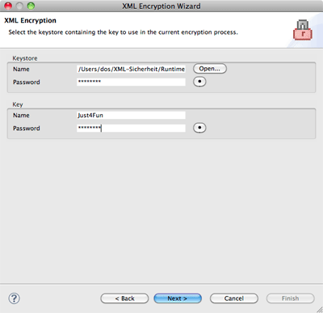

Use a Key from an existing Keystore is one of the alternatives as the second wizard page. Simply select the keystore containing the key you want to use in the current encryption process. All data is verified, you can only switch to the next case with a correct keystore and key password as well as an existing key alias.

The wizard automatically stores the entered data for the keystore name and the key name between sessions. Passwords are never stored and have to be entered every time.